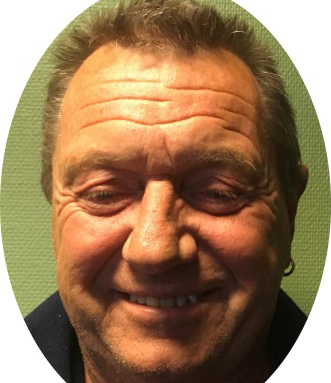

Om oss

Egil Tollefsen
Driftsjef
egil@procorr.no
90196970
Dagfinn Tollefsen
Daglig Leder
dagfinn@procorr.no
41505737
Stein Ove Scheie
Prosjektleder
stein.ove@procorr.no
92834594
ProCorr AS er et korrosjonsteknisk entreprenørfirma som gjennom ledelse, nøkkelpersonell og operatører representerer over 30 års praktisk erfaring i skips- og insustrimaling og beskyttelse av vannkraftverk. Selskapet har kontorer, lager og reparasjonsverksted i Svelvik.
ProCorr As påtar seg oppdrag som sandblåsing og sandsweeping av stål og betong, høytrykkrengjøring, kjemisk rengjøring, metallisering(sprøyteforsinkning og sprøytealuminisering), sprøytemling inklusive sprøyting av sinksilikat, epoxy og uretan mm, coating av laste- og ballasttanker, industritanker, rørledniner, turbinrøro.l, samt overflatebehandling i verksteder. Kort sagt det meste innen kvalifisert: Korrosjonsbekjempelse, Overflatebehandling og Malingvedlikehold.
ProCorr AS sitt operasjonsfelt er hovedsaklig i Skandinavia, skipsverft, petrokjemiske anlegg, industribedrifter og kraftverk, eller på brokonstruksjoner. ProCorr benytter de mest moderne maskiner, utstyr og hjelpemidler: Blåseklokker med fjernkontroll, siloer, sandsugere, industristøvsugere, høytrykksprøyter, avfuktings- og varmeaggregater, ventilasjons- og avsugeutstyr, kompressorer, "sky climbers", containere, brakker m.m. ProCorr AS er også korrosjonstekniske konsulenter, yter inspeksjonstjenester, foretar kvalitetskontroll og gir praktiske råd i spesifikasjonsvalg og malingvedlikehold.